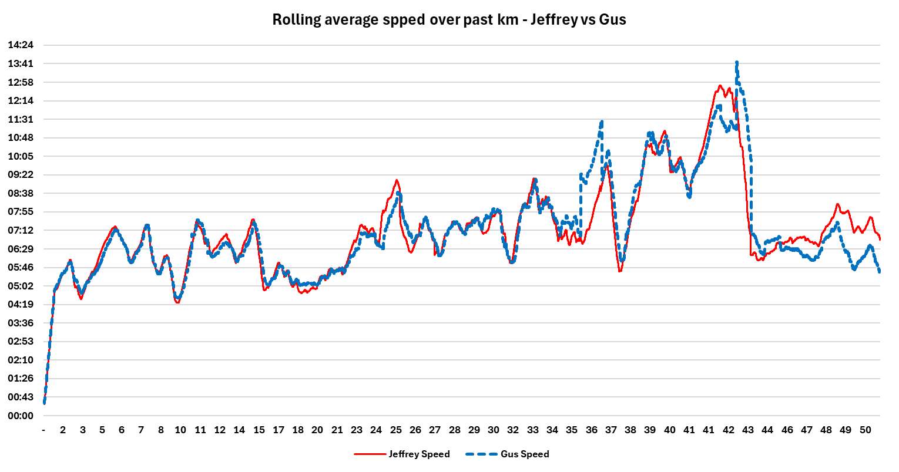
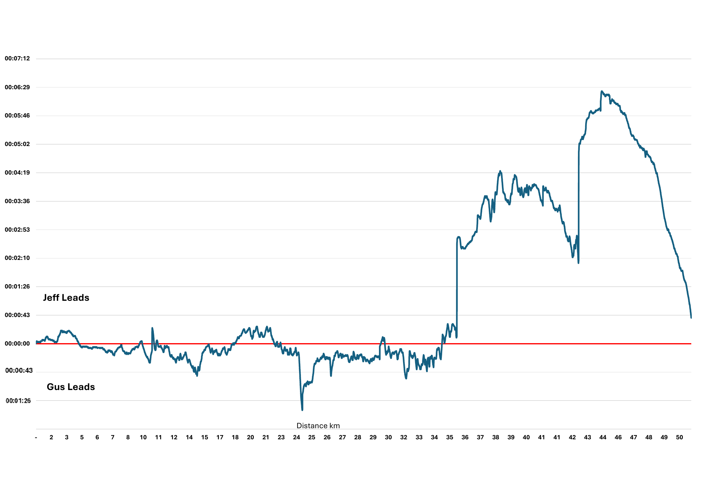

Lonely Mountain Ultra – Rivalry Report: Jeffrey vs Gus
The Lonely Mountain Ultra delivered everything trail running fans crave: brutal climbs, crushing lows, and a finish that came down to seconds between rivals Jeffrey and Gus.
The Early Moves (0–20km)
The opening kilometers took the runners steadily upward toward Boree Road Aid Station (4km). Gus stopped for a quick nature break before 10km, handing Jeffrey an early edge. But Gus fought back with a surge, showing he was fresh and confident.
At 18km, Jeffrey launched an attack on the climb, forcing Gus to respond. By Rosebank Road Aid Station (24km), Gus made a daring call: he skipped refilling fluids and surged past Jeffrey, taking the lead into the middle stages.
The Pain Cave (24–36km)
The rolling climbs into Towac Way (30km) and Tea House (35.5km) broke Gus’s rhythm. From 30km to 35km, he was deep in the pain cave, cramping and struggling to hold form. Jeffrey sensed the weakness, attacked hard past Tea House, and momentarily looked in control.
The Summit and the Shift (41km)
The climb to the Summit Aid Station (41km) was brutal. Jeffrey crested the peak still leading, but the effort took its toll. On the descent, he was suddenly gripped by cramps, his stride faltering.
Gus, meanwhile, found his second wind after the summit. Bit by bit, he closed the gap, hunting Jeffrey as the course plunged toward the finish.
The Final Kilometer – A Duel for Glory
With just 1km left, Gus finally had Jeffrey in sight. Jeffrey was battling through cramps, fighting to keep moving. Gus kicked hard, throwing everything he had into the chase.
Spectators could feel the tension — Gus charging, Jeffrey grimacing with every step. But Jeffrey, digging deep despite the cramps, held his line.
He crossed the finish 38 seconds ahead of Gus, sealing a gutsy victory in one of the most dramatic chapters of their rivalry yet.
Josh’s Return – The Game Changes
After 15 months out of racing, Josh lined up at the start with quiet determination. By the halfway mark, it was clear: the old pecking order no longer applied. Josh surged through the climbs and never looked back, blitzing both Jeffrey and Gus on his comeback. His strength and speed reminded everyone what true racing pedigree looks like.
For Jeffrey and Gus, the rivalry remains fierce — but now it has new purpose. Both have already set their sights on Jabulani 22km in April 2026, vowing to train harder than ever to finally bring Josh down.
Mitch – The Unseen Hero
On the same day, Mitch lined up for the 22km event. Mitch is the glue of the group, always showing up, always supporting — yet fate plays cruel tricks. Somehow, no one has ever managed to see him both start and finish a race.
This time, expectations were modest. Many thought Mitch would take hours longer. Instead, he delivered a stunning performance, crossing the line in 2 hours 30 minutes flat. The cruel twist? His friends and family arrived just 6 minutes too late.
So the legend grows: Did Mitch truly finish? Of course he did. But the question lingers — will anyone ever witness his finish with their own eyes?
Speed Comparison – Jeffrey vs Gus

Time Gap – Jeffrey vs Gus
